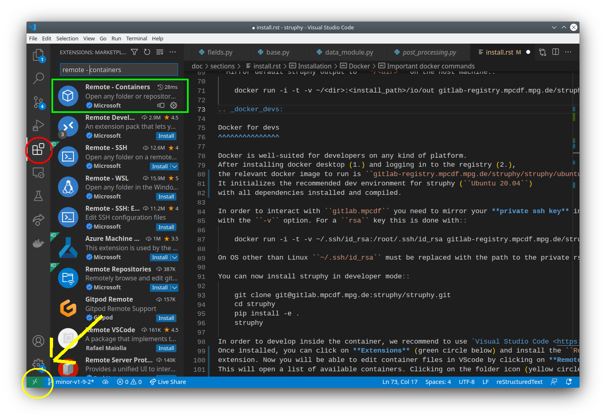

Install#
Prerequisites#
Basics:
Python >=3.10
C or Fortran compiler like gcc, gfortran
Linear algebra packages BLAS and LAPACK
For parallel runs:
An MPI library like open-mpi, mpich
OpenMP
Sample environments#
Some Linux/MacOS environments on which Struphy is continuously tested are:
apt install -y software-properties-common
add-apt-repository -y ppa:deadsnakes/ppa
apt update -y
apt install -y python3-pip
apt install -y python3-venv
apt install -y gfortran gcc
apt install -y liblapack-dev libopenmpi-dev
apt install -y libblas-dev openmpi-bin
apt install -y libomp-dev libomp5
apt install -y git
apt install -y pandoc
apt install -y libosmesa6 libosmesa6-dev libegl-mesa0
zypper refresh
zypper install -y python311 python311-devel
zypper install -y python311-pip python3-virtualenv
zypper install -y gcc-fortran gcc
zypper install -y lapack-devel openmpi-devel
zypper install -y blas-devel openmpi
zypper install -y libgomp1
zypper install -y git
zypper install -y pandoc
zypper install -y vim
zypper install -y make
- yum install -y wget yum-utils make openssl-devel bzip2-devel libffi-devel zlib-devel
- yum update -y
- yum clean all
- yum install -y gcc
- yum install -y gfortran
- yum install -y openmpi openmpi-devel
- yum install -y libgomp
- yum install -y git
- yum install -y environment-modules
- yum install -y sqlite-devel
- wget https://www.python.org/ftp/python/3.10.14/Python-3.10.14.tgz
- tar xzf Python-3.10.14.tgz
- cd Python-3.10.14
- ./configure --with-system-ffi --with-computed-gotos --enable-loadable-sqlite-extensions
- make -j ${nproc}
- make altinstall
- cd ..
- export PATH="/usr/lib64/openmpi/bin:$PATH"
- mv /usr/local/lib/libpython3.10.a libpython3.10.a.bak
dnf install -y wget yum-utils make openssl-devel bzip2-devel libffi-devel zlib-devel
dnf update -y
dnf install -y gcc
dnf install -y gfortran
dnf install -y blas-devel lapack-devel
dnf install -y openmpi openmpi-devel
dnf install -y libgomp
dnf install -y git
dnf install -y environment-modules
dnf install -y python3-mpi4py-openmpi
dnf install -y pandoc
dnf install -y sqlite-devel
wget https://www.python.org/ftp/python/3.10.14/Python-3.10.14.tgz
tar xzf Python-3.10.14.tgz
cd Python-3.10.14
./configure --with-system-ffi --with-computed-gotos --enable-loadable-sqlite-extensions
make -j ${nproc}
make altinstall
cd ..
mv /usr/local/lib/libpython3.10.a libpython3.10.a.bak
module load mpi/openmpi-$(arch)
brew update
brew install python3
brew install gcc
brew install openblas
brew install lapack
brew install open-mpi
brew install pkgconf
brew install libomp
brew install git
brew install pandoc
brew install hdf5
brew install netcdf-fortran
brew install cmake
export "FC=$(which gfortran)" # for gvec
export "CC=$(which gcc)" >> # for gvec
export "CXX=$(which g++)" >> # for gvec
On Windows systems we recommend the use of a virtual machine, for instance the multipass.
Interfaces to physics codes:
Check the requirements for GVEC.
Virtual environment#
In order to not interfere with existing Python packages, it is highly recommended to install Struphy in a virtual environment:
python -m pip install -U virtualenv
Then:
python -m venv struphy_env
source struphy_env/bin/activate
pip install -U pip
Install and compile#
pip install -U struphy
struphy compile
struphy -h
pip install -U struphy[phys]
struphy compile
struphy -h
pip install -U struphy[mpi]
struphy compile
struphy -h
git clone --recurse-submodules https://github.com/struphy-hub/struphy.git
cd struphy
pip install -e .[dev]
struphy compile
struphy -h
git clone --recurse-submodules https://github.com/struphy-hub/struphy.git
cd struphy
pip install -e .[all]
struphy compile
struphy -h
In case you encounter problems during install visit Trouble shooting.
Trouble shooting#
Install problems#
Make sure that you can
pip install -U mpi4py.mpi4py>=4.1.0 provides binaries for common platforms. In case of “exotic” platforms you might try
pip install -U mpi4py --no-binary mpi4pyIn many cases installing
apt install openmpi-develsolves a problem with missing headers.On Mac OS, you can try to install the command line tools (160 MB)
xcode-select --install.Struphy is not supported with Conda; however, in case you insist you might try:
conda install mpich conda install gxx_linux-64
Compilation problems#
If compilation fails,
struphy compile --deletecan help to clean up the environment.It can happen that during
struphy compileyou encounter:A module that was compiled using NumPy 1.x cannot be run in NumPy 2.2.1 as it may crash. To support both 1.x and 2.x versions of NumPy, modules must be compiled with NumPy 2.0. Some module may need to rebuild instead e.g. with 'pybind11>=2.12'.
At the moment this error is resolved with:
pip install numpy==1.26.4
Argument completion#
Struphy provides console argument completion through the package argcomplete. In order to enable it, make sure to have bash or zsh tab comlpetion enabled. After Struphy installation type:
activate-global-python-argcomplete
and follow the instructions. For activation you need to restart your shell, for instance with exec bash.
Docker#
You can run Struphy in a docker container, encapsulated from your host machine. The container is launched from an image which you can download and run immediately, irrespective of your architecture and OS.
User install#
To use Struphy via docker, perform the following steps:
Install Docker Desktop and start it.
If you do not want to preface the docker command with sudo, you can
create a Unix group
called docker and add your user to it.
If you are uncomfortable with running sudo, you can run docker in “rootless” mode.
It is recommended to read the Mac OS permission requirements. (REMARK: older versions of Mac OS may require older docker desktop versions.)
It is recommended to read the Windows permission requirements
Pull one of the availabale images, for instance:
docker pull spossann/ubuntu-for-struphy:main
Run the container:
docker run -it --rm spossann/ubuntu-for-struphy:main
The option -i stands for interactive while -t gives you a terminal.
Install Struphy.
Important docker commands#
docker imagesshows the images available on your computer.docker run -d -t --name <container_name> IMAGEruns the container in the background (detached).docker exec <container_name> COMMANDgives a bash command to a detached container.docker stop <container_name>stops the container.docker ps -llists all containers (also exited/stopped).docker restart <container_name>restarts the container in detached mode.docker attach <container_name>opens a terminal to a detached container.
Docker for devs#
Docker is well-suited for developers on any kind of platform.
In order to interact with Github you need to mirror your private ssh key into the container
with the -v option. For a rsa key this is done with:
docker run -it -v ~/.ssh/id_rsa:/root/.ssh/id_rsa ghcr.io/struphy-hub/struphy/ubuntu-with-reqs:latest
On OS other than Linux ~/.ssh/id_rsa must be replaced with the path to the private rsa key.
You can now install Struphy from source (see above). An installation in editable mode (pip install -e .) can only be done
within a virtual environment.
In order to develop inside the container, we recommend to use Visual Studio Code.
Once installed, you can click on Extensions (red circle below) and install the Dev Containers
extension (green box). Now you will be able to edit container files in VScode by clicking on the green symbol
in the bottom-left corner (yellow circle). Choose Attach to a running container ... and select
the container in which you want to edit. By doing File - Open Folder... you are able to
open any folder from the container.
We recommend to install the following VScode extensions inside the container:
PythonextensionPython ExtensionsextensionJupyterextension

IPP computing clusters#
Information about the computing clusters at the Max Planck Institute for Plasma Physics can be found in the IPP computing cluster Wiki.
TOK cluster installation#
Load necessary modules:
module purge module load gcc/14 python-waterboa/2025.06 openmpi/5.0 mpi4py/4.1.1
Create and source virtual environment:
python3 -m venv struphy-env source struphy-env/bin/activate
Install the latest release of Struphy (with mpi):
pip install -U struphy[mpi] struphy compile
Or, if you want the source code (with tests, examples and tutorials), install from the current devel branch:
git clone --recurse-submodules https://github.com/struphy-hub/struphy.git
cd struphy
pip install .[mpi]
struphy compile
When using SLURM, make sure to activate the virtual environment in your BATCH script:
source struphy-env/bin/activate
MPCDF cluster installation#
Load necessary modules:
module purge module load gcc/14 python-waterboa/2025.06 openmpi/5.0 mpi4py/4.1.1
Create and source virtual environment:
python3 -m venv struphy-env source struphy-env/bin/activate
Install Struphy by not using the binaries of mpi4py (see install methods from above: pypi_install or source_install):
pip install -U struphy –no-binary mpi4py
When using SLURM, make sure to activate the virtual environment in your BATCH script:
source struphy-env/bin/activate OMPI_MCA_mpi_warn_on_fork=0 export OMPI_MCA_mpi_warn_on_fork